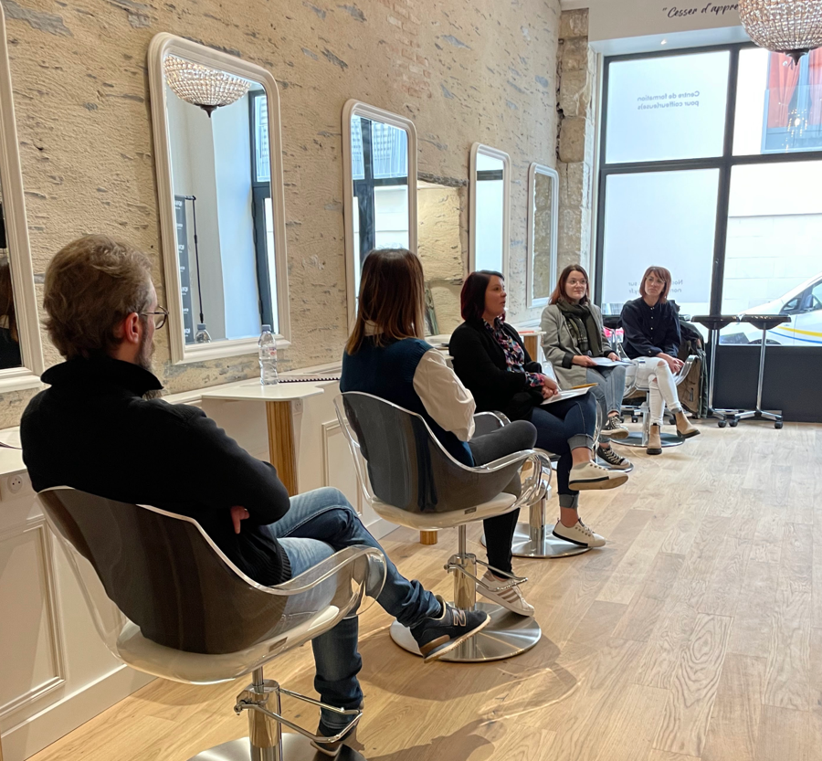
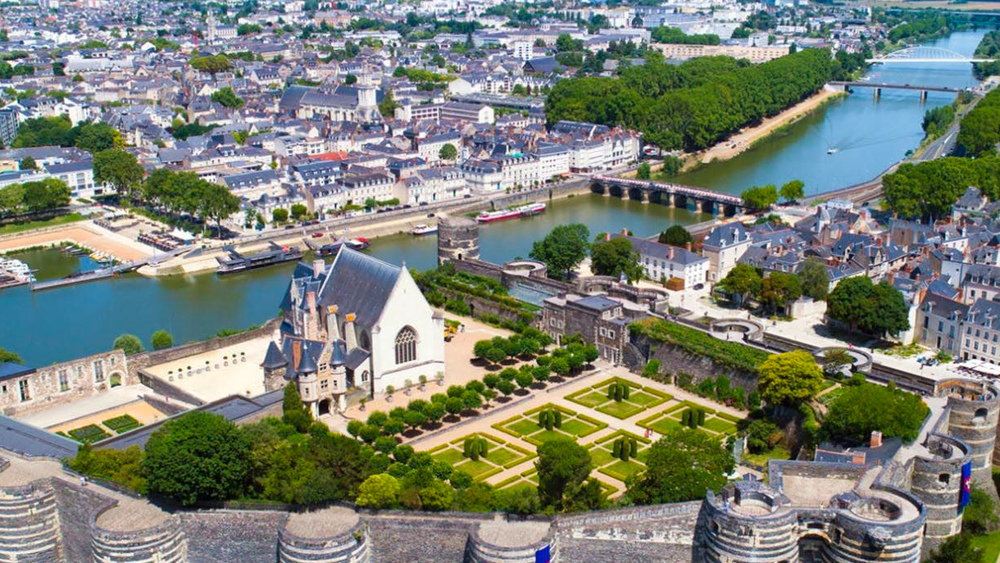

Créée en 2020, NOMAD ACADEMY est une jeune académie de formations dédiée aux professionnels de la coiffure. Notre mission : vous accompagner. Pour ça, NOMAD ACADEMY a développé des formations coiffure en adéquation avec les nouvelles tendances mode.

Créée en 2020, NOMAD ACADEMY est une jeune académie de formations dédiée aux professionnels de la coiffure. Notre mission : vous accompagner. Pour ça, NOMAD ACADEMY a développé des formations coiffure en adéquation avec les nouvelles tendances mode.
De Château du Roi-René en passant par la Maison d’Adam et le Musée des Beaux-Arts, venez découvrir Angers lors de nos formations Nomad Academy. Vous ne serez pas déçus ! Notre slogan ? Une ville où il fait bon vivre !